Bu sənəd sistemin gündəlik ekranlarını izah edir. Yuxarıdakı tarix kompüterin tarixi deyil, bankın sistem tarixidir. Məbləğlər qəpiklə, faizlər dörd rəqəm dəqiqliyi ilə saxlanır.
Sol menyuda yalnız icazəniz olan bölmələr görünür. Admin bütün menyunu görür.
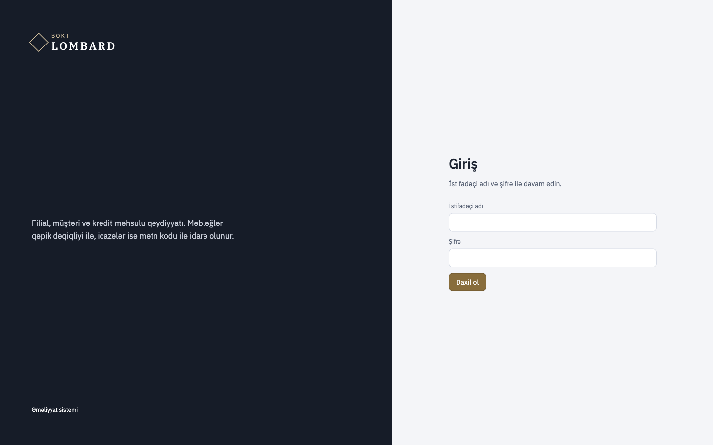
Lokal yoxlama hesabları:
| İstifadəçi | Şifrə | Nə görür |
|---|---|---|
| admin | Admin123! | Bütün bölmələr |
| operator | Operator123! | Əməliyyat menyusu, icazə səhifəsi yoxdur |
| kassir | Kassir123! | Operatorla eyni menyu, kassaya yazma yoxdur |
Səhv şifrə cəhdi sayılır. Limit dolanda hesab kilidlənir. Admin istifadəçi kartında yeni şifrə yazıb Şifrəni sıfırla və səhv sayını təmizlə işarəsini qoyaraq hesabı açır. Yeni şifrə ən azı 8 simvol olmalıdır.
Çıxış üçün yuxarı sağdakı Çıxış düyməsindən istifadə edin.
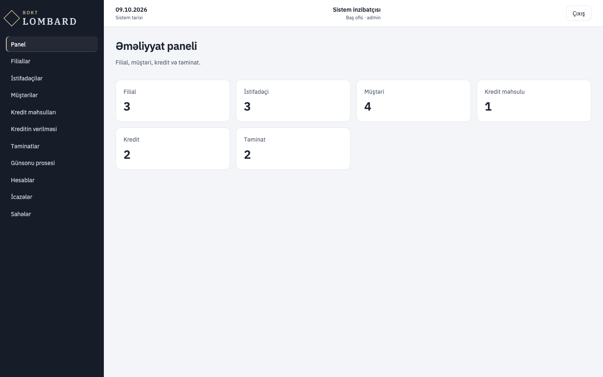
Panel filial, istifadəçi, müştəri, kredit məhsulu, kredit və təminat sayını göstərir. Rəqəmlər bazadakı faktiki saydır.
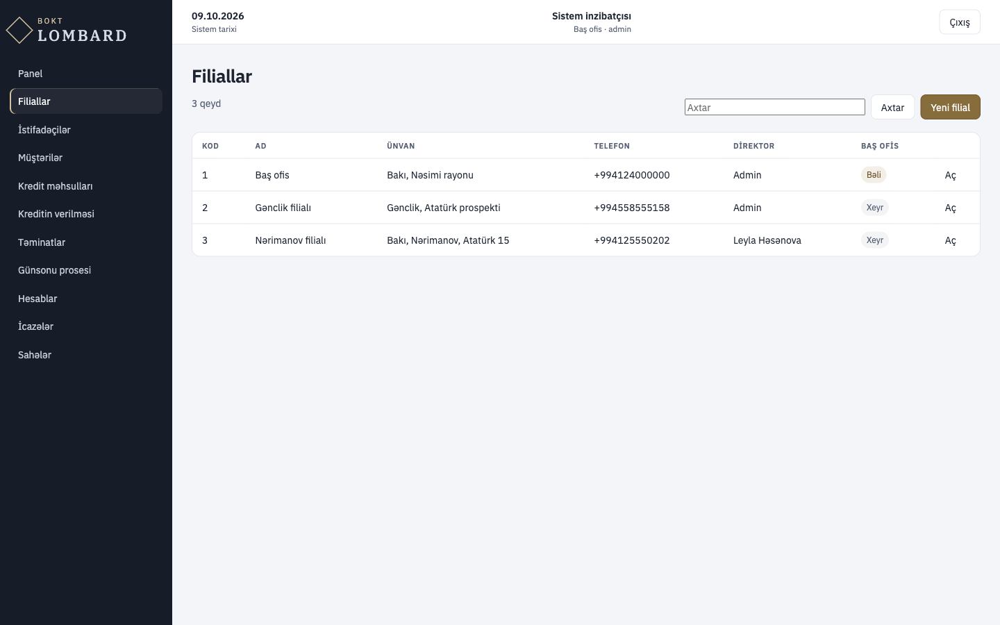
Siyahıda kod, ad, telefon, direktor və ünvan görünür. Axtar xanasına ad və ya telefonun bir hissəsini yazıb Enter basın. Yeni filial yeni kart açır.
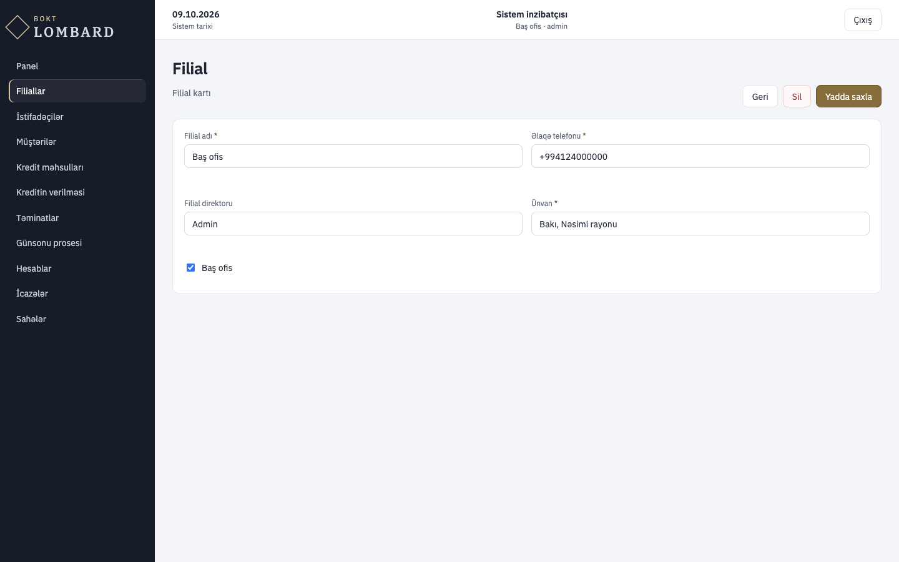
Məcburi sahələr ad, telefon və ünvandır. Baş ofis yalnız bir filialda ola bilər: yeni filialı baş ofis etsəniz, əvvəlki baş ofis adi filiala çevrilir.
Yadda saxla dəyişikliyi yazır. Yeni kart yaradılandan sonra yaşıl «Yadda saxlandı» yazısı kartın üzərində qalır. Sil filialı silir. Kreditə bağlı filial silinmir.
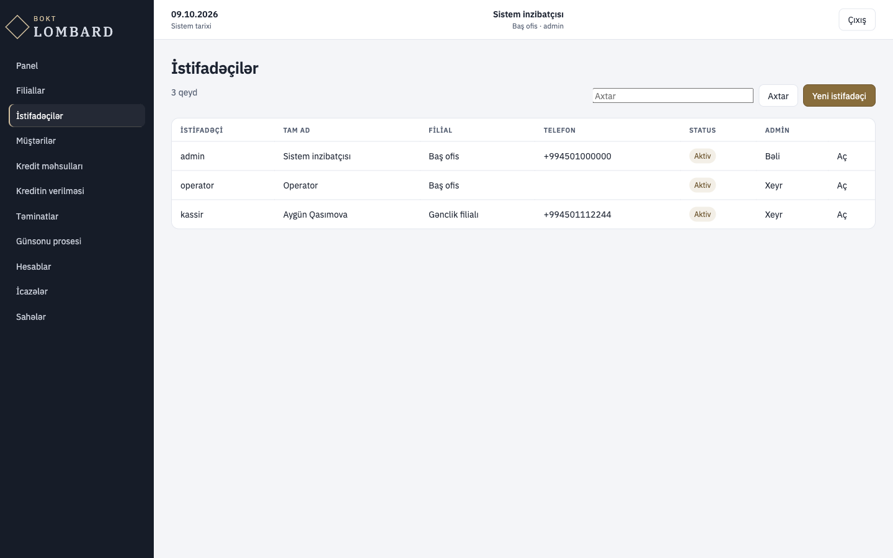
Hər sətir adı, telefonu, filialı, statusu və admin olub-olmadığını göstərir.
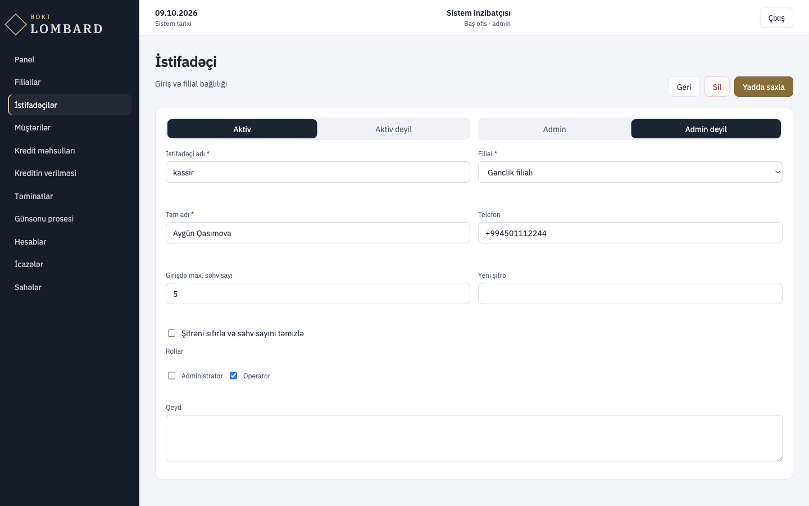
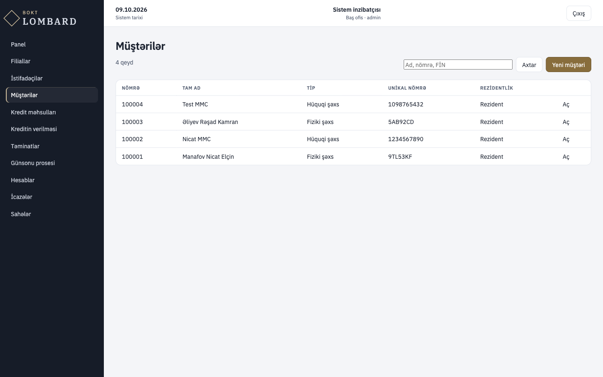
Axtarış ad, müştəri nömrəsi və FİN/VÖEN üzrə işləyir. Yeni fiziki müştəri nömrəsi 100001-dən davam edir.
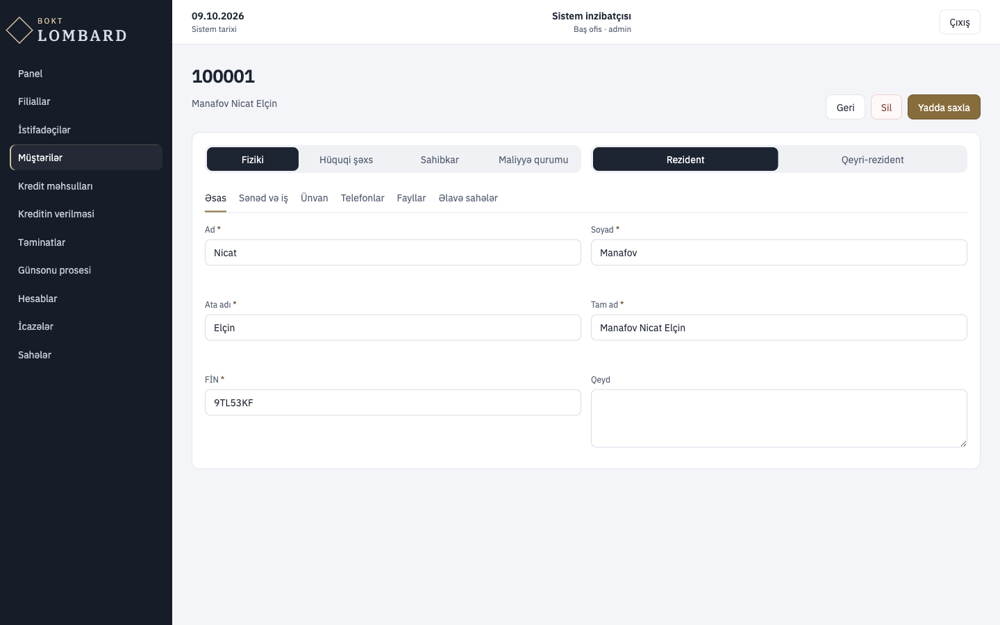
Dörd növ var:
| Növ | Unikal nömrə | Əlavə qayda |
|---|---|---|
| Fiziki | FİN, 7 simvol | Ad, soyad, ata adı və sənəd məcburidir |
| Hüquqi şəxs | VÖEN, 10 rəqəm | Fəaliyyət kodu, sektor və əlaqəli şəxslər |
| Sahibkar | FİN və ya VÖEN | Həm sənəd, həm fəaliyyət kodu və sektor |
| Maliyyə qurumu | VÖEN, 10 rəqəm | Tam ad və ünvan |
Ümumi qaydalar:
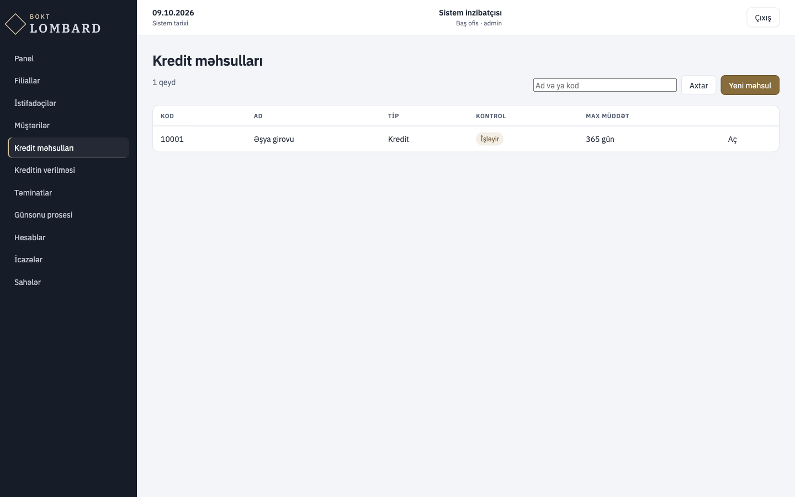
Məhsul kodu boş qalsa növbəti nömrə verilir. Siyahı kodu, adı, kredit tipini və kontrolun işləyib-işləmədiyini göstərir.
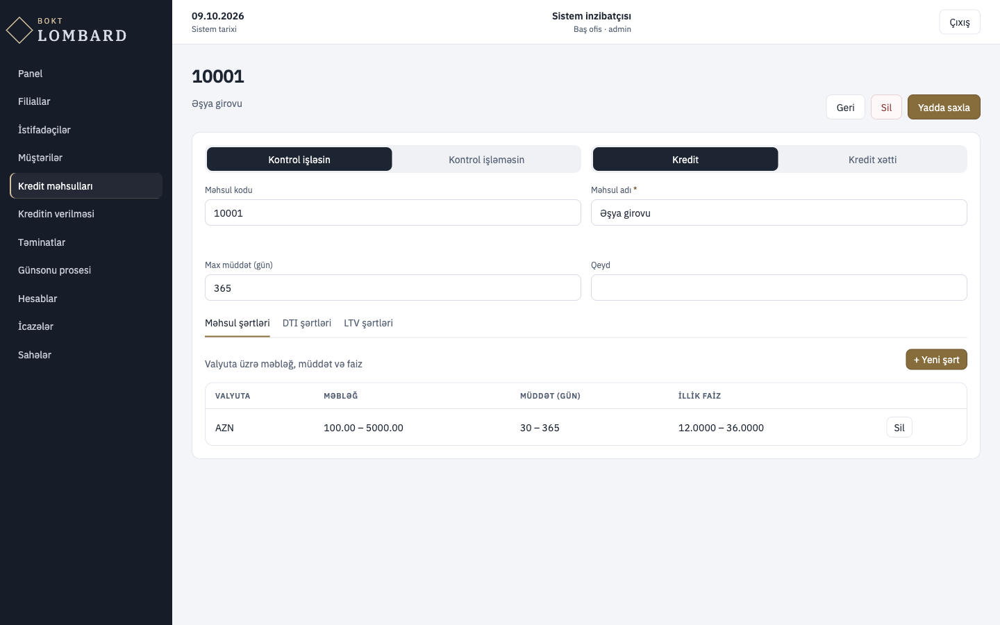
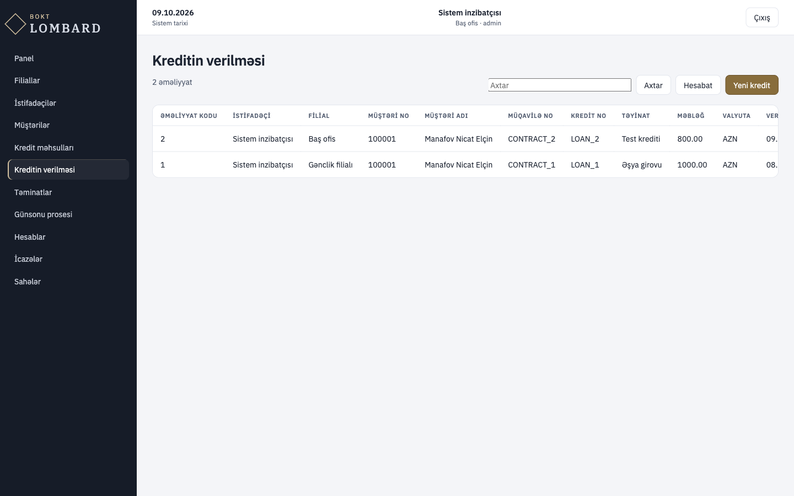
Siyahı üfüqi sürüşür. Əsas sütunlar əməliyyat kodu, istifadəçi, filial, müştəri, müqavilə, kredit nömrəsi, məbləğ, faiz, komissiya, müddət və statusdur. Axtar kredit, müqavilə və müştəri nömrəsinə baxır.
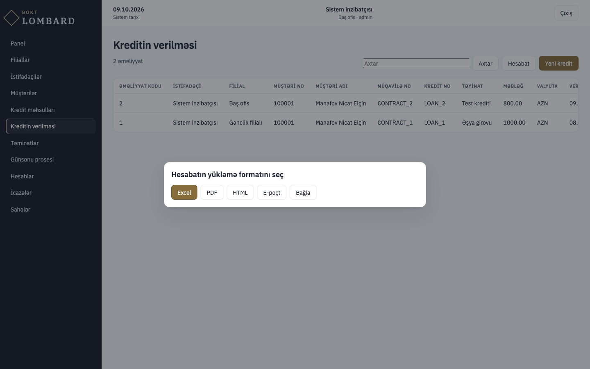
Hesabat düyməsi siyahının hazırkı nəticəsini yükləyir:
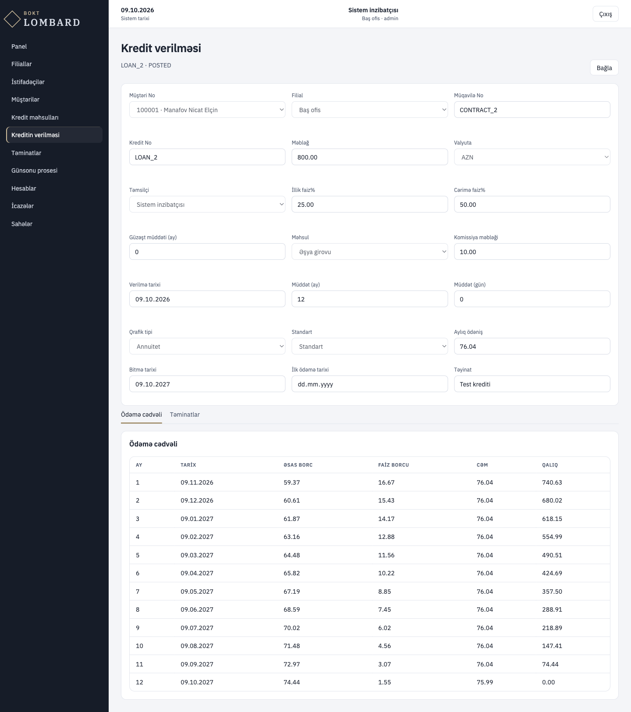
Yeni kreditdə müqavilə və kredit nömrəsi özü gəlir (CONTRACT_n, LOAN_n). Müştəri, filial, məbləğ, valyuta, illik faiz, cərimə faizi, məhsul, verilmə tarixi və müddət doldurulur. Güzəşt müddəti kredit müddətindən kiçik olmalıdır. Qrafik tipi annuitetdir.
Status WAITING olanda kart dəyişir. Cədvəl yarat ödəmə cədvəlini qurur:
Kassaya yaz yalnız cədvəl yarandıqdan sonra işləyir. Bundan sonra status POSTED olur, məbləğ və şərtlər dəyişmir, kart silinmir. Kassaya yazma icazəsi olmayan istifadəçi bu düyməni görmür.
Məhsul kontrolu açıqdırsa, həddən kənar məbləğ, müddət və faiz saxlanmır. Təminatlar səhifəsindən mövcud təminatı kreditə bağlamaq olar. Bağlanan məbləğ təminatın likvid dəyərindən böyük ola bilməz.
Kassaya yazılış belə keçir: kredit portfelinə debet, kassadan kredit. Komissiya varsa kassadan komissiya gəlirinə yazılır. AZN təminat üçün balansdankənar girov memo-su da keçir.
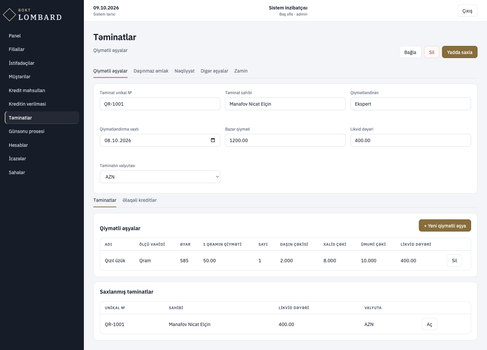
Beş növ var: qiymətli əşyalar, daşınmaz əmlak, nəqliyyat, digər əşyalar və zamin. Hamısında unikal nömrə, sahib, qiymətləndirən, qiymətləndirmə vaxtı, bazar qiyməti, likvid dəyər və valyuta var. Unikal nömrə təkrar ola bilməz.
Qiymətli əşyada sətir əlavə olunur: ad, qram, əyar, bir qramın qiyməti, say, daşın çəkisi, xalis və ümumi çəki. Xalis çəki boşdursa, ümumi çəkidən daşın çəkisi çıxılır. Likvid dəyər boşdursa, xalis çəki qram qiymətinə vurulur. Sayı bu vurmaya qarışmır. Sətirlər olanda kartın likvid dəyəri sətirlərin cəmi olur.
Əlaqəli kreditlər səhifəsindən təminatı gözləyən və ya verilmiş kreditə bağlayın. Məbləğ likvid dəyərdən böyük ola bilməz.
Verilmiş kreditə bağlı təminat silinmir. Sistem bunu mətnlə bildirir.
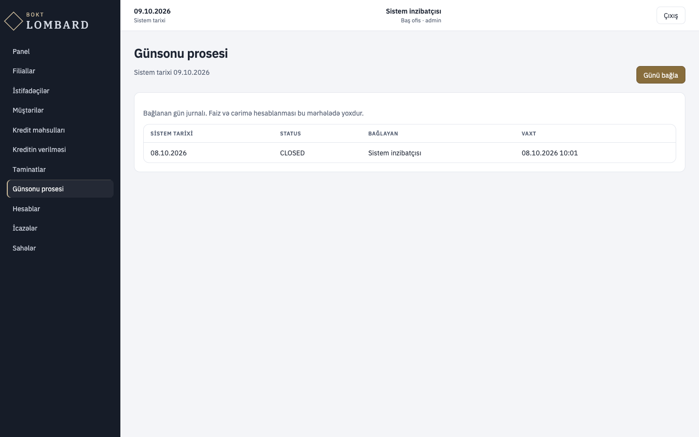
Ekran cari sistem tarixini və bağlanmış günlərin jurnalını göstərir. Günü bağla həmin günü CLOSED yazır və sistemi növbəti günə keçirir. Bu addım faiz və cərimə hesablamır. Düymə yalnız eod.run icazəsi olanda görünür. Eyni gün ikinci dəfə bağlanmır, çünki bağlanandan sonra tarix irəliləyir.
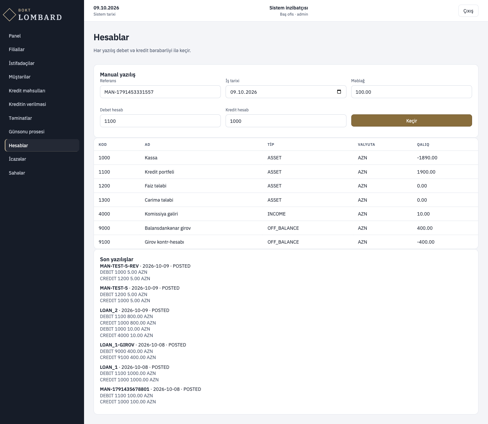
Hər yazılış eyni məbləğdə debet və kreditdən ibarətdir. Ekrandakı qalıqlar:
| Kod | Ad | Mənası |
|---|---|---|
| 1000 | Kassa | Filialın pulu |
| 1100 | Kredit portfeli | Verilmiş kreditlər |
| 1200 | Faiz tələbi | Hesablanacaq faiz |
| 1300 | Cərimə tələbi | Hesablanacaq cərimə |
| 4000 | Komissiya gəliri | Tutulmuş komissiya |
| 9000 | Balansdankənar girov | Girov memo-su |
| 9100 | Girov kontr-hesabı | Girovun əks yazılışı |
Manual yazılışda referans, iş tarixi, məbləğ, debet və kredit hesabı yazılır. İş tarixi açılışda sistem tarixinə bərabər olur. Olmayan hesab rədd edilir. Eyni referansla təkrar basanda məbləğ ikinci dəfə keçmir.
Bu düymə ledger.post icazəsi olmayan istifadəçidə gizlənir. Qalıqları görmək üçün ledger.read kifayətdir.
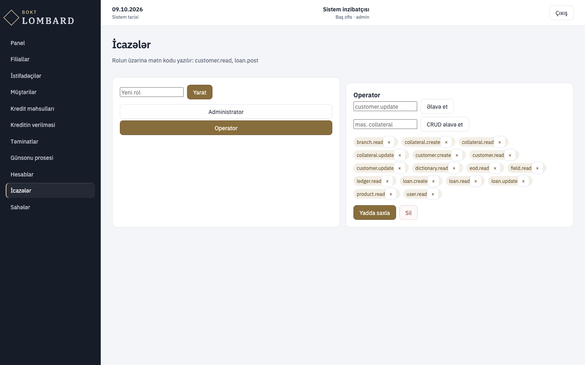
Rolun üzərinə mətn kodu yazılır, məsələn customer.read və ya loan.post. Kod modul.əməliyyat şəklində olmalıdır. Səhv mətn əlavə olunmur.
CRUD əlavə et bir resursun create, read, update və delete kodlarını bir dəfəyə yığır. Məsələn collateral.
Yadda saxlamadan kod siyahıda qalsa da, bazaya düşmür. İcazəsi olmayan şəxs bu ünvanı birbaşa açsa, panelə qayıdır və «Bu səhifəyə icazəniz yoxdur» görür.
Əsas sərhədlər:
loan.post — krediti kassaya yazır.loan.delete — gözləyən krediti silir.eod.run — günü bağlayır.ledger.post — manual yazılış keçirir.dictionary.manage və field.manage — lüğət və dinamik sahəni dəyişir.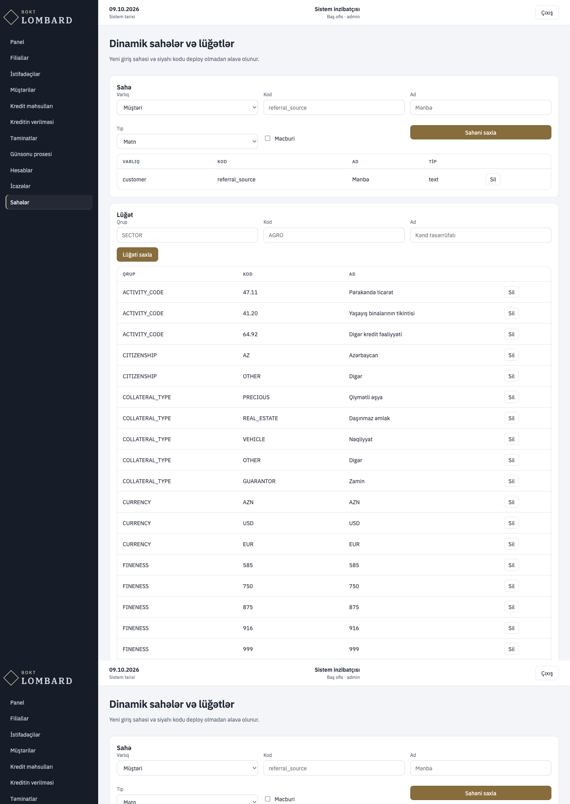
Sahə yeni xananı proqram yeniləmədən əlavə edir. Varlıq müştəri, məhsul, filial və ya istifadəçi ola bilər. Kod kiçik latın hərfləri ilə yazılır. Tip mətn, ədəd, məbləğ, tarix və ya bəli/xeyr ola bilər. Məcburi sahə saxlananda boş qala bilməz. Müştəri kartının Əlavə sahələr səhifəsində görünür.
Lüğət açılan siyahıların kodudur: valyuta, sektor, fəaliyyət kodu, girov növü, əyar, ölçü vahidi və standart. Qrup, kod və ad yazılır. Sil kodu siyahıdan çıxarır. Eyni qrup və kodu yenidən saxlasanız, sətir geri qayıdır.